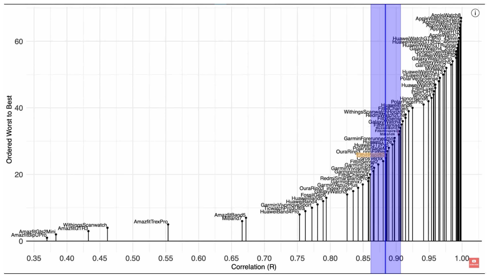

IoT Wearable for Sleep Cycle Analysis & Smart Alarming
A compact, low-cost, and energy-efficient wearable that wirelessly monitors heart rate and visualize it on a smartphone.
I create innovative engineering solutions from concept to deployment, specializing in embedded systems, hardware design, and IoT applications.
I am an IPC CID-certified Electronics Engineer who builds complete embedded systems from concept to prototype.
My experience is hands-on across the full stack:
My focus is on the system-level integration—the tangible work of making the hardware, firmware, and software function as a single, cohesive unit.
A compact, low-cost, and energy-efficient wearable that wirelessly monitors heart rate and visualize it on a smartphone.
Professional-grade electrochemical measurement system with sub-nanoamp resolution, auto-ranging, and real-time data visualization.
High-precision motion tracking system with sensor fusion, quaternion-based orientation, and real-time 3D visualization.
Imagine waking up refreshed, not startled by a jarring alarm. That was the vision behind this project: a compact, low-cost, low-power IoT wearable engineered from the ground up to understand your sleep cycles through heart rate measurement. This endeavor was a deep dive into the complete IoT product lifecycle, spanning the design and development of custom hardware, firmware, and mobile app development.
The primary challenge was to develop an affordable wearable capable of accurate, continuous physiological monitoring like heart rate and movement (specifically Photoplethysmography - PPG) throughout an 8-hour sleep period. This demanded excellent power efficiency to last the night, robust signal processing to extract clean data from noisy on-wrist measurements, and seamless data transmission to a mobile device for analysis and user interaction – all while keeping the Bill of Materials (BOM) as low as possible. Custom-designing every layer of the system gave us complete control to specifically design a product that met our requirements.


This project was a fully collaborative effort between two students, emphasizing joint involvement in every aspect rather than dividing tasks. We tackled each major system component together—hardware design, firmware development, mobile app creation, and integration—to develop a comprehensive, end-to-end understanding. This collaborative approach enabled ongoing discussion, rapid troubleshooting, and iterative refinement, ensuring both team members developed deep, hands-on expertise across the entire engineering process. It also fostered a unified vision throughout the product's development lifecycle.
To master the critical power challenge for all-night operation and to keep cost low, we engineered a power management strategy, using a dual-processor architecture. An ultra-low-power STM8S microcontroller acted as the dedicated 'sensing engine.' It continuously sampled Heart Rate (PPG) data at a precise 50Hz – a frequency also chosen to leverage Nyquist-Shannon theorem of aliasing to filter out common 50Hz environmental noise without extra hardware filters. (See 1st and 2nd slide below)
The true power savings, however, were unlocked by the role of its partner, an ESP32-C3 Mini. This more powerful MCU remained in Deep Sleep mode for the vast majority of the time, waking for mere milliseconds only when signaled by the STM8S to store, connect, and transmit data to the mobile application. (See 3rd slide)
Inter-processor level: The STM8 continuously produces data while the ESP32 sleeps. We implemented a handshake protocol where the STM8 signals when its 125-byte buffer is ready, wakes the ESP32 via GPIO, then waits for acknowledgment before UART transmission begins.
As illustrated in our system timing diagram (4th slide), the ESP32 would wake every 2.5 seconds upon the 'Wake ESP' signal, triggered after the STM8S filled its buffer, to receive a 125-byte data chunk (The limit of the stm8) via UART. After aggregating four such transfers into its own buffer (representing 10 seconds of data), it would then briefly handle the efficient Bluetooth Low Energy (BLE) 'Announce Data' and subsequent transmission to the app before returning to its ultra-low power Deep Sleep state. This orchestrated interplay, which minimized the ESP32's active time, was pivotal. It enabled an impressive 16.84 hours of continuous operation on a single 245mAh battery, an 8-fold improvement over the unoptimized continuous monitoring method attributable to this duel microcontroller operation, Data packaging scheme and optimized wake/sleep scheduling.


A core design criteria from the outset was to create a truly wearable and unobtrusive device. This necessitated attention to component selection for minimal footprint and a highly compact Printed Circuit Board (PCB) layout. We successfully engineered the entire system onto a mere 35mm x 19mm PCB, a significant achievement given the inclusion of two microcontrollers, a novel analog front-end for PPG sensing, power/and battery management systems and a USB-C receptacle. (1st Slide)
For cost-effectiveness, we committed to a 2-layer PCB design. This presented a considerable routing challenge compared to a multi-layer board, especially for a mixed-signal circuit where attention to PCB best practices becomes near critical. However, we were able to implement best practices even within these constraints. This included clear differentiation and separation of power, analog, and digital sections on the board to minimize noise coupling and ensure signal integrity. Ground planes were carefully managed, and trace routing for sensitive analog signals was prioritized to shield them from digital interference, all contributing to the reliable performance of our PPG sensor. (2nd Slide)


Before we could even begin to analyze complex physiological signals, we first had to build undoubtable trust in our entire data pipeline. We achieved this through end-to-end, Known Signal Validation. By injecting a precise 1.1Hz sine wave from a function generator directly into the STM8S microcontroller's ADC, we traced its journey through every step of the system. The resulting clean, perfectly reconstructed sine wave (1st slide) – captured after traversing STM8S buffers, UART, ESP32 buffers, BLE, and mobile app reassembly – conclusively verified the integrity of our entire data pathway, timing and packaging scheme. This validation ensured that any variations seen later with the actual PPG sensor were due to physiology or sensor noise, not systemic data corruption.

The data's journey culminated in a user-friendly mobile application, developed using Flutter for cross-platform compatibility. This app served not only as the BLE client and data display interface but also housed critical Digital Signal Processing (DSP) capabilities.
A key challenge was transmitting enough continuous data for meaningful Fast Fourier Transform (FFT) analysis given BLE 4.0's 20-byte packet limitation. Our solution was a circular buffer on the app. The ESP32 firmware buffered 10 seconds (500 bytes) of heart rate data, which the app retrieved through 25 consecutive GATT requests. The app aggregated these segments, maintaining a 50-second rolling window (2,500 samples) for FFT processing. This strategy achieved a fine 1.2 BPM frequency resolution for accurate heart rate detection, While offloading intensive computation and thus Power consumption from the wearable.
For user-friendliness, unique identification and communication, we implemented custom 128-bit UUIDs for our BLE GATT services and characteristics. This ensured the app would only identify that given device and therefore not connecting to or showing other devices in the area.

From the project's inception, a primary objective alongside technical excellence was to ensure the wearable could be cost-effective, guiding our component selection and design decisions throughout development.
| Component | Price for 1 | Price for 100 | Price for 1000 |
|---|---|---|---|
| LLS2D11I2TR | 16.39 DKK ($2.46) | 9.35 DKK ($1.40) | 7.25 DKK ($1.09) |
| STM8S003F3P6TR | 7.48 DKK ($1.12) | 5.22 DKK ($0.78) | 3.40 DKK ($0.51) |
| tcr2ef33(ict) | 2.24 DKK ($0.34) | 0.93 DKK ($0.14) | 0.47 DKK ($0.07) |
| MCP6002T-I/MS | 2.79 DKK ($0.42) | 2.11 DKK ($0.32) | 2.11 DKK ($0.32) |
| MCP6004T-I/ST | 3.67 DKK ($0.55) | 2.79 DKK ($0.42) | 2.79 DKK ($0.42) |
| ESP32C3-MINI-1-N4 | 12.24 DKK ($1.84) | 12.24 DKK ($1.84) | 12.24 DKK ($1.84) |
| SFH 2430-Z | 12.31 DKK ($1.85) | 6.31 DKK ($0.95) | 6.31 DKK ($0.95) |
| 16x 0402 caps | 10.88 DKK ($1.63) | 0.67 DKK ($0.10) | 0.40 DKK ($0.06) |
| 23x 0402 resistors | 15.64 DKK ($2.35) | 1.13 DKK ($0.17) | 0.65 DKK ($0.10) |
| LS0710HABH1500 | 12.10 DKK ($1.82) | 9.39 DKK ($1.41) | 7.82 DKK ($1.17) |
| Mcp73831-2aci/mc | 5.37 DKK ($0.81) | 4.42 DKK ($0.66) | 4.42 DKK ($0.66) |
| PCB | 3.46 DKK ($0.52) | 2.80 DKK ($0.42) | 1.21 DKK ($0.18) |
| Total | 104.57 DKK ($15.69) | 57.35 DKK ($8.60) | 49.06 DKK ($7.36) |
Our strategic component selection resulted in a unit cost of just 49.06 DKK ($7.36 USD) at volume production, making our wearable solution far more affordable than commercial alternatives typically retailing for $100-150.


The graph demonstrates the heart rate data recorded by our wristband (dashed red line) alongside a Fitbit Inspire 2 (solid blue line). The two traces display similar patterns, indicating that the wristband's performance is in line with the FitBit's results, despite occasional variations we can confidentily validate our wearable heart rate monitor can compete favourably with leading consumer brands both in terms of affordability and accuracy.
The scatter plot illustrates (2nd slide) the correlation between heart rate measurements recorded by our wristband and the Fitbit Inspire 2. Each point represents a pair of concurrent heart rate readings from the two devices. The red line represents the line of best fit, indicating the general trend of the relationship. The Pearson correlation coefficient of R = 0.873 showcases a strong positive correlation between the measurements from the wristband and the Fitbit

To provide additional context for our validation results, we reference The Quantified Scientist's comprehensive ranking of commercial wearable heart rate accuracy. This data-driven analysis evaluates devices using Pearson correlation coefficients (R) against chest strap ECG measurements—the gold standard for heart rate monitoring with near-perfect accuracy (R=1.0). The Fitbit Inspire 2, which served as our reference device, achieves approximately R = 0.85 in these industry benchmarks.
Our measured correlation of R = 0.873 with the Fitbit Inspire 2 positions our prototype within the blue shaded region, which represents the statistical confidence interval around our measurement. This range accounts for natural variation in the comparison methodology and indicates where our true correlation with the Fitbit likely falls. Given that the Fitbit itself correlates at R ≈ 0.85 with the gold standard, our strong agreement with this commercial device demonstrates comparable real-world performance for sleep monitoring applications.
The ranking clearly shows our prototype achieving correlation values that place it among mid-to-high-end commercial wearables, validating our design approach while maintaining significant cost advantages. This benchmark analysis confirms that our engineering choices—from analog front-end design to digital signal processing—deliver measurement quality competitive with established consumer devices.
In this section, we delve into potential optimizations for the system, focusing particularly on power management and operational efficiency.
To further compact the design, the existing USB-C module could be replaced with a wireless charging system. This not only reduces physical space but also enhances the user experience by eliminating the need for wired connections.
A major area for improvement is the system's power supply, using a switch-mode power suply would drastically improve our energy efficiency:
we have implemented the Bluetooth 4.0 protocol instead of the newer 5.0 version, which allows us to send 251bytes. Allowing us to send fewer and larger data sets conserving more power
In conclusion, this report successfully demonstrates the design and development of a compact, accurate, and cost-effective wearable device for heart rate monitoring, essential for sleep tracking systems. Rigorous testing validated the device's high accuracy, achieving a strong correlation coefficient (R = 0.87) compared to a commercial Fitbit, confirming its suitability for consumer use and potential for smart sleep phase analysis. Notably, we achieved significant battery optimization, extending continuous operation to nearly 17 hours on a modest 245 mAh battery through strategic dual-processor management. Furthermore, the economical production price of just 49 DKK per unit highlights the project's success in meeting our core priorities: low cost, low power consumption, compactness, and high accuracy.
We began this project with a vision—to bridge our electronics background with the challenge of building a real, market-ready device. Stepping beyond classroom theory, we quickly discovered that translating formulas and textbook concepts into a fully functional product demanded far more than technical know-how. Every phase, from designing custom PCBs and optimizing firmware for power efficiency, to implementing robust signal processing and crafting a user-friendly mobile app, forced us to adapt and learn on the fly. The steepest learning curves often came from setbacks. Early signal integrity issues, unexpected power drains, and Missing data packets were not just obstacles—they were catalysts for deeper understanding. Debugging these problems pushed us to validate every link in our system data pipeline, ensuring each step functioned as intended. Each failure forced us to question assumptions, communicate more clearly, and become more resourceful engineers. By the end of the project, we weren't just students recalling lecture slides—we had become engineers who welcome uncertainty and complexity. We learned to see setbacks not as dead ends, but as opportunities to understand our system more deeply. Most importantly, we realized that building something truly innovative requires not just technical skill, but also resilience, adaptability, and a commitment to continuous learning.
Below is a real-time timelapse video showing the device in use alongside a Fitbit for comparison testing.
As the sole electronics engineer in a three-person DTU-incubated startup focused on revolutionizing electrochemical sensing, I was tasked with a critical challenge: developing a professional-grade potentiostat system from scratch that could rival commercial instruments costing tens of thousands of dollars, while keeping our cost under $500. This wasn't just about building a measurement device—it was about creating the technological foundation for our novel non-enzymatic glucose sensor that would enable point-of-care diagnostics in resource-limited settings.
Commercial potentiostats like the PalmSens EmStat4 (€3,500) or Metrohm Autolab systems (€15,000+) set a high bar for performance. Our challenge was to achieve comparable specifications—sub-nanoamp current resolution, wide dynamic range from 1nA to 100mA, and precise potential control—while making it affordable and customizable for our specific sensor chemistry. This required mastering analog circuit design at its most demanding: managing femtoamp-level leakage currents, implementing auto-ranging without introducing glitches, and maintaining stability across six orders of magnitude in current measurement.


The heart of any potentiostat is its control loop, which maintains a precise potential between the working and reference electrodes while measuring the resulting current. I implemented a classic three-op-amp topology with critical enhancements:
The control loop stability was particularly challenging. Electrochemical cells present complex impedances that vary with frequency, potentially causing oscillation. I implemented compensation networks with adjustable phase margin, achieving stable operation across cell capacitances from 1nF to 10μF—covering everything from microelectrodes to large-area sensors.
To achieve our ambitious dynamic range of 1nA to 100mA, I designed a sophisticated auto-ranging system with seven overlapping ranges:
| Range | TIA Gain | Resolution | Full Scale |
|---|---|---|---|
| Range 1 | 10 MΩ | 1 pA | ±200 nA |
| Range 2 | 1 MΩ | 10 pA | ±2 μA |
| Range 3 | 100 kΩ | 100 pA | ±20 μA |
| Range 4 | 10 kΩ | 1 nA | ±200 μA |
| Range 5 | 1 kΩ | 10 nA | ±2 mA |
| Range 6 | 100 Ω | 100 nA | ±20 mA |
| Range 7 | 10 Ω | 1 μA | ±200 mA |
The key innovation was implementing "make-before-break" switching using low-leakage analog switches (ADG1419) with break-before-make delays under 10ns. This prevents the working electrode from going to open circuit during range changes, which would disturb the electrochemical reaction. Additionally, I implemented predictive ranging based on the derivative of the current signal, switching ranges before saturation occurs.
Achieving sub-nanoamp noise floor required obsessive attention to PCB layout:
The result: measured noise floor of 450 fA RMS in the most sensitive range, approaching theoretical limits set by Johnson noise of the feedback resistor.
I selected the STM32F446RE microcontroller for its unique combination of features essential for electrochemical measurements:
The firmware architecture leverages FreeRTOS to manage multiple concurrent tasks:
The firmware implements multiple electrochemical techniques, each with specific timing and control requirements:
I developed a comprehensive Python application using PyQt5 and object-oriented design principles:

I designed a robust binary protocol for high-speed data transfer:
To validate our potentiostat's performance, I conducted extensive comparison tests against the industry-standard PalmSens EmStat4:


| Parameter | Our System | EmStat4 | Commercial Requirement |
|---|---|---|---|
| Current Range | 1 nA - 100 mA | 1 nA - 100 mA | 1 nA - 10 mA |
| Current Resolution | 0.003% of range | 0.002% of range | 0.01% of range |
| Potential Range | ±2.5 V | ±3 V | ±2 V |
| Potential Resolution | 76 μV | 100 μV | 1 mV |
| Noise (RMS @ 1nA) | 450 fA | 300 fA | 1 pA |
| Max Sampling Rate | 10 kHz | 50 kHz | 1 kHz |
| System Cost | €380 | €3,500 | - |
Beyond the electronics, I contributed to designing the physical sensor probe housing that interfaces with our electrochemical sensors:
At the nanoamp measurement range, even the slightest PCB contamination or humidity can cause leakage currents exceeding the signal. Solution: I implemented a multi-layer defense including conformal coating (Parylene C), active guard rings maintained at the same potential as sensitive nodes, and software-based automatic offset compensation that tracks and subtracts drift in real-time.
USB connection created ground loops causing 50Hz interference. Solution: Full galvanic isolation using ADuM4160 USB isolator and isolated DC-DC converters (ROE-0505S), achieving >100dB common-mode rejection and eliminating all mains frequency interference.
Temperature changes caused significant drift in nanoamp measurements. Solution: Implemented hardware temperature compensation using a precision thermistor network and software correction algorithms. Added thermal mass to critical components and achieved drift <5 pA/°C.
Maintaining microsecond-precision timing while handling USB communication and auto-ranging. Solution: Implemented a dual-buffer DMA scheme with ping-pong buffers, allowing continuous acquisition while transferring data. Used hardware timers for critical timing, achieving jitter <100ns.
This potentiostat became the cornerstone of our startup's technology platform:
The system has been adopted by three research groups at DTU:
| Component Category | Key Components | Cost (EUR) |
|---|---|---|
| Precision Op-Amps | OPA192 (2x), AD8608 (4x) | €45 |
| Microcontroller | STM32F446RE | €12 |
| Data Converters | 16-bit DAC (DAC8571), 24-bit ADC (ADS1256) | €35 |
| Analog Switches | ADG1419 (4x), Protection circuits | €28 |
| Isolation | ADuM4160 USB, ROE-0505S DC-DC | €42 |
| Power Management | Linear regulators, references, filters | €25 |
| PCB (4-layer) | 100x80mm, ENIG finish, controlled impedance | €30 |
| Passives & Connectors | 0.1% resistors, C0G caps, BNC, USB | €38 |
| Enclosure & Probe | Aluminum case, 3D-printed parts, cables | €55 |
| Assembly & Testing | In-house assembly and calibration | €70 |
| Total | €380 |
At production volumes of 100 units, component costs reduce to approximately €250 per unit.
This project taught me that achieving professional-grade measurements isn't just about selecting premium components—it's about understanding the complete signal chain from first principles. Every microamp of leakage current, every microvolt of offset, and every picofarad of parasitic capacitance matters when pushing the boundaries of measurement precision.
Complete documentation including schematics, PCB files, firmware source code, and Python application is available on GitHub. The project is open-source under MIT license, encouraging collaboration and further development by the electrochemistry community.
Lead engineer for IoT product development, responsible for design and development of the complete product lifecycle and cross-functional team coordination.
Developed firmware and hardware for industrial off-shore inspection.
"As an advisor to SmartSens, I have had the privilege of working closely with Alan for more than a year. Alan is an exceptionally talented young engineer who combines a sharp attention to detail with the ability to maintain a clear overall perspective. He demonstrates outstanding competence in integrating advanced analog circuitry with digital hardware and firmware development. Moreover, Alan has consistently shown the ability to carry projects from the earliest concept stage through to the finished product, including PCB layout and component assembly. In addition to his strong technical skills, Alan is a pleasure to work with. He approaches challenges with curiosity, creativity, and persistence, and he collaborates effectively with colleagues across different disciplines. SmartSens has greatly benefited from his contributions, particularly in the development of frontend solutions for newly designed sensor technologies."
"Alan is a passionate entrepreneur and self-driven engineer, a bit nerdy in the best way when it comes to learning and building. He's a highly skilled electronics engineer with a strong grasp of both hardware and firmware, and when he encounters something unfamiliar, he quickly figures it out, finds possible solutions, and puts them to the test. At SmartSens, he has designed and built low-noise analog circuits, PCB layouts, and microcontroller firmware, as well as developed software with a handy, user-friendly interface that ties the entire system together from hardware to end-user experience."
"Alan developed the core electronics for our novel sensor technology, delivering a robust, user‑friendly potentiostat tailored precisely to our sensor's electrochemistry. His work provided the essential platform for our sensors."
Whether you're interested in discussing potential projects, exploring collaboration opportunities, or just wanting to say hello, I'd love to hear from you.